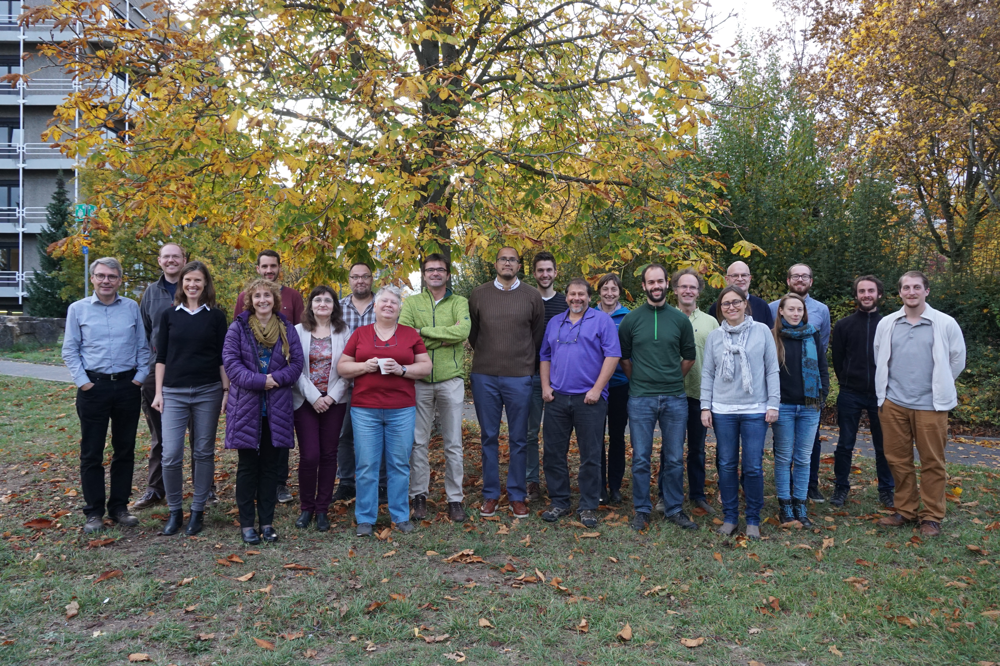

Overview
OCTAV-UTLS is a SPARC activity, which analyses trends of ozone and water vapour specifically in the UTLS region. The activity is lead by Irina Petropavlovkhikh (NOAA), Peter Hoor (JGU) and Luis Millan (JPL) who replaces Gloria Manney (NWRA).
The distribution of tracers in the Upper Troposphere and Lower Stratosphere (UTLS) shows a large spatial and temporal variability, caused by competing transport, chemical, and mixing processes near the tropopause, as well as variations in the tropopause itself. This strongly affects quantitative estimates of the impact of radiatively active substances, including ozone and water vapour, on surface temperatures, and complicates diagnosis of dynamical processes such as stratosphere troposphere exchange (STE). The community thus faces challenge of optimally exploiting the existing portfolio of observations to better understand the physical composition of the UTLS, including past long-term changes in trace gas distributions and the processes that control them.
This activity will focus on improving the quantitative understanding of the UTLS’s role in climate and the impacts of stratosphere-troposphere exchange (STE) processes on air quality. Achieving this goal requires a detailed characterization of existing measurements (from aircraft, ground-based, balloon, and satellite platforms) in the UTLS, including understanding how their quality and sampling characteristics (spatial and temporal coverage, resolution) affect the representativeness of these observations.
One key aspect of this activity will be to develop and apply common metrics to compare UTLS data using a variety of geophysically-based coordinate systems (e.g., tropopause, equivalent latitude, jet-focused) using meteorological information from reanalysis datasets. This approach will provide a framework for comparing measurements with diverse sampling patterns and thus will leverage the meteorological context to derive maximum information on UTLS composition and its relationships to dynamical variability.
The activity will produce recommendations for data comparisons in the UTLS region based on specific techniques/instruments. We will provide an assessment of gaps in current geographical/temporal sampling of the UTLS region that limit determining variability and trends, and suggest future measurement strategies that would help fill those gaps.
Co-leads
| Name | Institution |
|---|---|
| Peter Hoor | Johannes Gutenberg University, Mainz, Germany |
| Christian Rolf | Forschungszentrum Jülich GmbH, Jülich, Germany |
| Luis Millán | NASA Jet Propulsion Laboratory, Caltech, CA, USA |
Steering Committee
| Name | Institution |
|---|---|
| Harald Bönisch | Karlsruhe Institute of Technology, Germany |
| Rob Damadeo | NASA Langley Research Center, USA |
| Michaela Hegglin | University of Reading, UK / Forschungszentrum Jülich, Germany |
| Daniel Kunkel | Johannes Gutenberg University Mainz, Germany |
| Thierry Leblanc | NASA Jet Propulsion Laboratory, Caltech, CA, USA |
| Gloria Manney | NorthWest Research Associates, USA |
| Irina Petropavlovskikh | NOAA/CIRES, University of Colorado, USA |
| Gabriele Stiller | Karlsruhe Institute of Technology, Germany |
| Susann Tegtmeier | University of Saskatchewan, Canada |
| Kaley Walker | University of Toronto, Canada |
Publications
Featured Publications
- Millán, L., Hoor, P., Hegglin, M. I., Manney, G. L., Jeffery, P. S., Weyland, F. M., et al. (2025): Ozone trends in the upper troposphere‐lower stratosphere using equivalent latitude‐potential temperature coordinates. Geophysical Research Letters, 52, 2025GL118651. https://doi.org/10.1029/2025GL118651
- Luis F. Millán, Peter Hoor, Michaela I. Hegglin, Gloria L. Manney, Harald Boenisch, Paul Jeffery, Daniel Kunkel, Irina Petropavlovskikh, Hao Ye, Thierry Leblanc, and Kaley Walker (2024): Exploring ozone variability in the upper troposphere and lower stratosphere using dynamical coordinates. Atmos. Chem. Phys., 24, 7927–7959. https://doi.org/10.5194/acp-24-7927-2024
- Author, B. et al. Title of methods or data paper. Journal Name, year. doi/link
References
Add newsletters, reports, datasets, and external references here.
Meetings
Upcoming Events
Month Day, Year: OCTAV UTLS workshop or teleconference. Add registration and agenda links.
Past Events
OCTAV Meeting at KIT, Karlsruhe
26/27 June 2025
Agenda:

ISSI-workshops in Berne, Switzerland
28 February – 3 March 2023 & 30 April – 3 May 2024

Organizer: Luis F. Millàn.
SPARC Newsletter No. 64, 2025, pp. 3-7: Report on the APARC OCTAV-UTLS ISSI Working Group Meetings, Bern, Switzerland, by P. S. Jeffery, K. A. Walker, L. F. Millán, P. Hoor, M. I. Hegglin, G. L. Manney, H. Bönisch, D. Kunkel, I. Petropavlovskikh, H. Ye, T. Leblanc and F. M. Weyland.
SPARC Newsletter No. 59, 2022, p. 23: OCTAV-UTLS activity: update from the March 2022 workshop, by I. Petropavlovskikh, H. Bönisch, M. Hegglin, P. Hoor, P. Jeffery, D. Kunkel, T. Leblanc, G. Manney, L. Millán, K. Walker and H. Ye.
SPARC Newsletter No. 55, 2020, p. 17: The third SPARC OCTAV-UTLS meeting, Thierry Leblanc, Luis Millán, Peter Hoor, and Irina Petropavlovskikh.


OCTAV Meeting at TMF facility
3.-5. March 2020

This year meeting will be hosted by Thierry Leblanc at the TMF observatory (Jet Propulsion Laboratory, California Institute of Technology, Wrightwood, CA, USA) and will take place from 3.-5. March 2020.
The goal is to compare the first trend results from different platforms in JETPAC-based transformed coordinates
To participate please send a message to Thierry Leblanc or the OCTAV Co-leads. Since the number of participants is limited please act soon.
Agenda:

Travel information:

Resources
Data & Tools
Useful Links
Add related programs, institutional pages, and partner organizations.
Contacts
For questions, contact project@example.org.